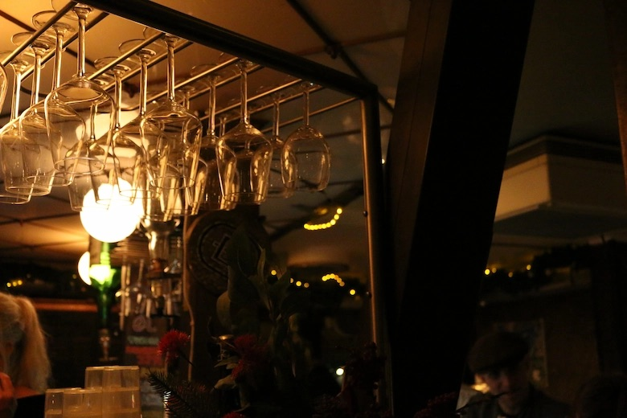
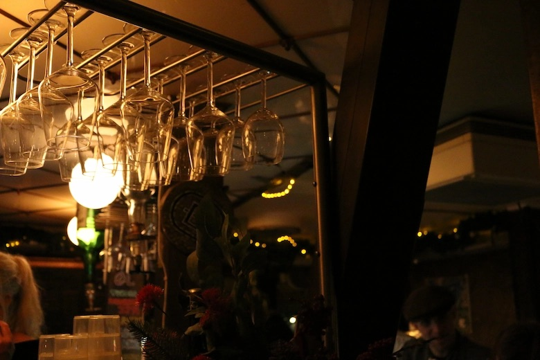
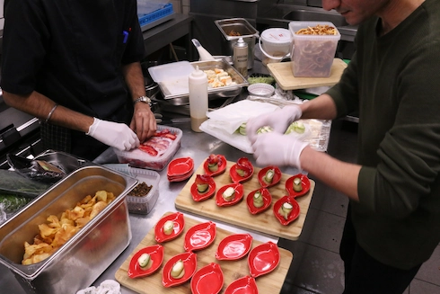
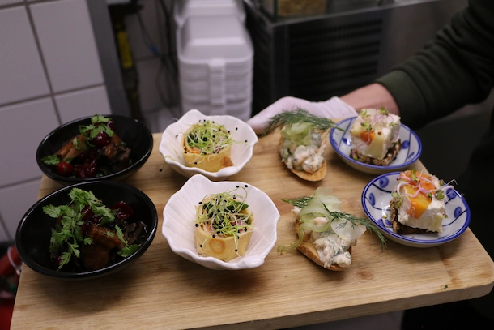
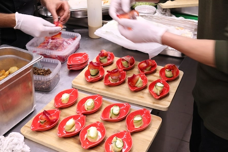

LEGENDARISK CAFÈ I HJERTET AF KØBENHAVN
Bankeråt er skabt med en passion for at levere lækre gastronomiske oplevelser for vores gæster, samtidig med at skabe en hyggelig bar og tryg stemning. Vi glæder os til at se dig.



SLUK TØRSTEN...
Vi har et kæmpe udvalg af drikkevarer, kolde såvel som varme.
BANKERÅT
Med kærlig respekt for den nostalgiske atmosfære og kulturelle sjæl, vil Bankeråt dele events, musikalske oplevelser, kunst, kultur, kram, lækre retter på menuen, drikkevarer for enhver smag og ikke mindst masser af hjerterum med alle der besøger den hyggelige café, placeret på Ahlefeldtsgade i København.

BOOK BORD
Bordreservation op til 10 mennesker automatisk bekræftiget. Er I over 10, vil vi kontakte jer